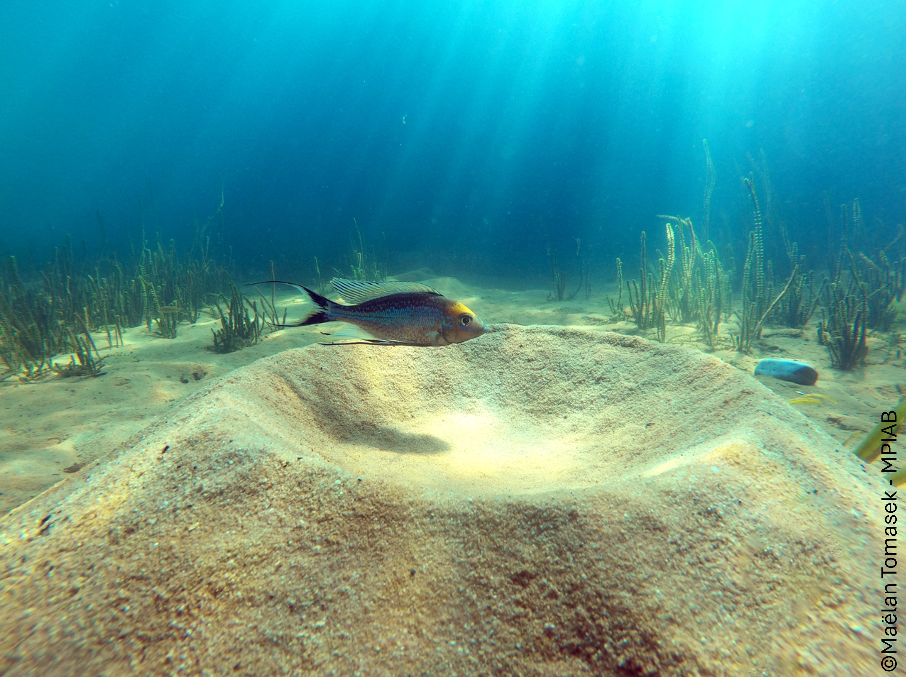
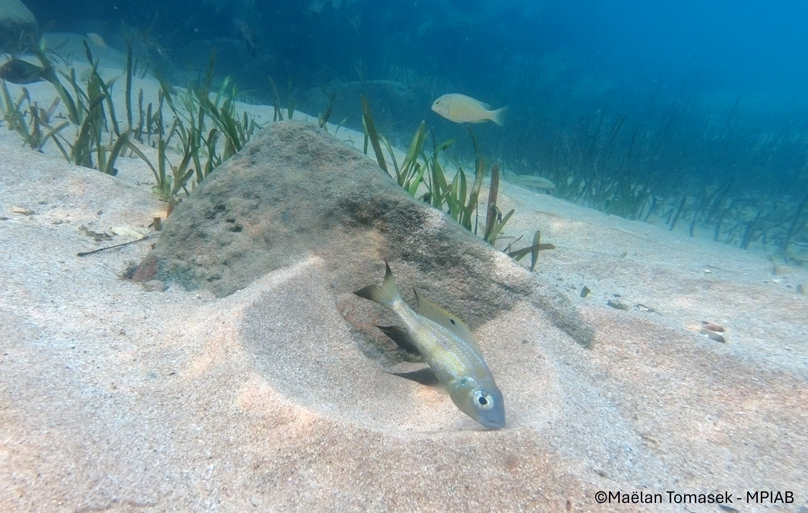
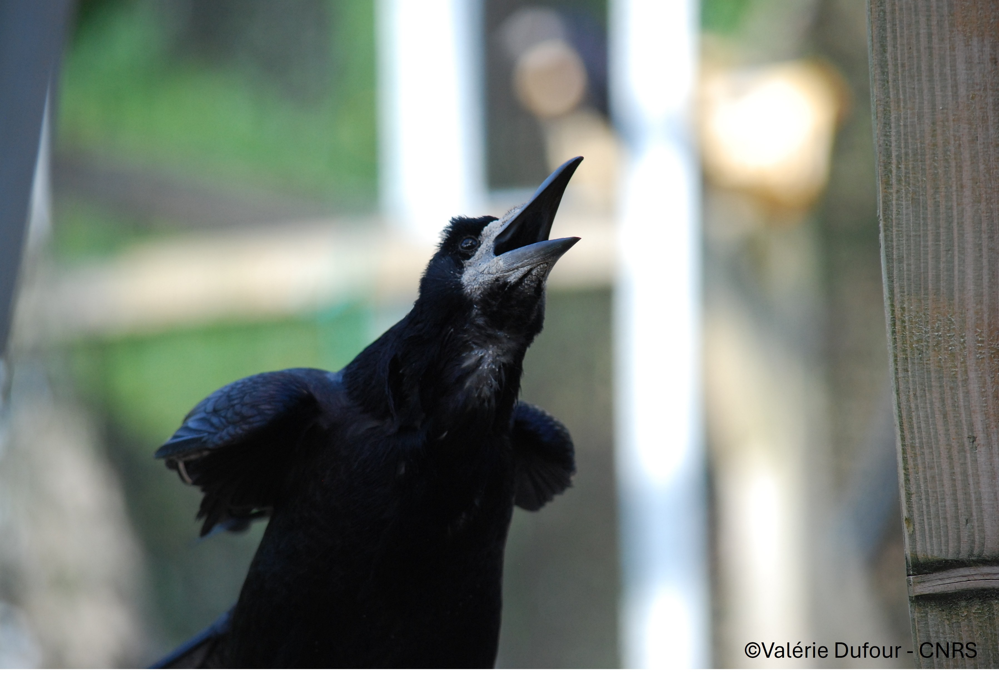

About My Research
My research aims at deciphering animal minds. I am interested in animal cognition, i.e., how animals view their physical and social worlds and interact with them. To that end, I have been lucky to work with several species and to conduct some of this work in the wild.
By studying cognition in the field and in the lab, I aim to understand how and why cognitive abilities evolve, and how they are shaped by ecology, sociality, and individual experience.
I am also deeply invested in animal ethics and welfare. I believe that rigorous science and compassionate treatment of animals are fully compatible goals.
Check out my research below!
News
April 2026
🏠️🐟️ GOING HOME
Can fish find their way back home?
This is the question that we have asked in this study led by the great Zoë Goverts. She compared three species of shell-dwelling cichlids from Lake Tanganyika and showed that they were not all equally able to find their way back to their home shells. Besides, some appear to give more importance to landmarks than others. I am very honoured to have been part of this project!
And you, can you always find your way back home? How?
Read the paper here →January 2026
🐦⬛🎶💦 SINGING IN THE SHOWER
This time, rooks sing in the shower!
In this wonderful experiment led by Killian Martin, rooks could place themselves below sound showers and sing along the sounds coming from them. Some rooks showed interesting singing patterns, flexibly adjusting the rhythm of their vocalisations to the rhythm of the showers!
I am so thrilled to be a co-author on this paper showing once again that rooks' singing abilities have been so far underestimated.
Read the paper here →August 2025
🐟️👀🐟️ TO LOOK OR NOT TO LOOK
Can fish learn from watching others?
In this study, we tested three species of shell-dwelling cichlids, caught from the wild in Lake Tanganyika, to examine this question. These species are very small fish which live in big empty shells on the bottom of the lake. First, we trained them to go inside specific shells to get a food reward. Then, we made them observe each other to see if what they saw mattered.
Turns out, they did learn to approach new scary experimental apparatuses quicker by watching others, but they kept their more specific choices personal. And you, do you prefer relying on what you know or on what you see others do?
Read the paper here →
February 2025
🤿🐠 FISH CAN RECOGNISE DIVERS
When you look at fish in the sea, have you ever thought that they could be looking back at you? Surely they can see you but they cannot get to know you, right? They cannot recognise you. Right? Right?
Many anecdotes suggested they can actually do it but we finally tested it experimentally. Very rapidly, wild fish learnt to recognise individual SCUBA-divers, reliably following the nice diver (the one who would give them food, of course).
So here are a couple of questions for you: Are you surprised that fish can recognise humans individually? Does it change the way you view fish? Why?
Check out the video below that explains how we did it!
Read the paper here →June 2024
🐌⚔️🐠 FISH VS FISH VS SNAILS
We did it again! We tested whether bower-building fish in Lake Tanganyika could control their impulse to remove snail shells from their bowers. But this time, we added a new species: Cyathophraynx furcifer.
This new species was way worse than the other at controlling themselves. Interestingly, this difference in inhibitory control could be linked to differences in how they build their bowers.
Can these two species put aside these differences over their common hate of snails? Will they collaborate? Will they fight together? The snail war has just begun!
Read the paper here →
October 2023
🐌🐟️ GET THE (S)HELL OUT OF HERE!
Have you ever had a snail in your bed? If yes, you're either French or a fish that participated in our experiments.
We studied a wonderful species of fish in Lake Tanganyika: Aulonocranus dewindti. Males of this species build sand structures called bowers to attract females. And they hate when their bower is dirty! The public ennemy number one: snails.
We showed that if a snail shell and a stone were placed in their bower, they always removed the shell first. We then tested whether they would have enough self-control to refrain from doing so and learn to remove the stone first. The least we can say is that it was not easy for them! But some did. Think about that next time you find a snail and a stone in your bed.
Read the paper here →
February 2023
🐦⬛🎶💦 SINGING IN THE BATH
Do you believe corvids cannot sing? Think again!
In this study, we show that rooks do sing and that they love to sing over loud noises - like the sound of their bath being filled with water! More impressively, they can synchronize their vocalisations to the rhythm of the water noise. We're not the only ones singing in our bathrooms!
Read the paper here →
Academic works
Peer-reviewed publications
Comparative spatial cognition in wild Tanganyikan cichlids: navigation performance varies with home range and shelter availability.
Animal Cognition
Rooks ( Corvus frugilegus ) can show spontaneous vocal flexibility when exposed to dynamically changing rhythmic sounds.
Animal Cognition
Experimental study of social learning in three wild shell-dwelling Tanganyikan cichlids that vary in sociality.
International Journal of Comparative Psychology
Wild fish use visual cues to recognize individual divers.
Biology Letters
Differences in inhibitory control in two species of Tanganyikan bower-building cichlids contrasting in building flexibility.
Ecology & Evolution
Cognitive flexibility in a Tanganyikan bower-building cichlid, Aulonocranus dewindti .
Animal Cognition
Spontaneous vocal coordination of vocalizations to water noise in rooks ( Corvus frugilegus ): an exploratory study.
Ecology and Evolution
Theses
The evolution of cognitive abilities in an adaptive radiation model: Tanganyikan cichlids.
🏆 Thesis Prize of the French Society for the Study of Animal Behaviour SFECAImpact de la santé en recherche comportementale et cognitive : focus sur les organismes aquatiques. (Impact of health in behavioural and cognitive research: focus on aquatic organisms)
Oral presentations
"Wild cognition: is something fishy with traditional evolutionary theories of cognition?"
Invited seminar, School of Biological Sciences, Monash University, Australia (2026)
"Decision-making strategies of two related fish species diverge under increased perceptual load"
Congress of the French Society for the Study of Animal Behaviour SFECA (2025)
🏆 Best Student Talk"How may fish help us navigate the troubled waters of animal cognition?"
Invited seminar — Behavioural Ecology Research Group, Monash University (2024); Behavioural, Ecology and Evolution of Fishes Research Group, Macquarie University (2024); Behaviour and Biomechanics Research Group, Oxford University (2025)
"Inhibitory control in Tanganyikan bower-building cichlids covaries with bower complexity"
Congress of the International Society for Behavioural Ecology ISBE (2024)
"Evolution of cognitive abilities in an adaptive radiation model: cichlids of Lake Tanganyika"
Invited seminar, Early-Career Researchers Discord group, SFECA (2024)
"Growing wild: Fish cognition in the field"
Invited seminar, Department of Aquaculture and Fish Biology, Hólar University, Iceland (2024)
"Pubescent teenagers or Tanganyikan cichlids? Cognitive experiments with unmotivated wild fish"
ASAB Behaviour Congress, Bielefeld, Germany (2023)
🏆 Best Student Talk"Cognitive flexibility in a wild Tanganyikan cichlid, Aulonocranus dewindti "
Congress of the French Society for the Study of Animal Behaviour SFECA (2023)
"Spontaneous vocal coordination of vocalisations in rooks"
Congress of the French Society for the Study of Animal Behaviour SFECA (2019)
Scientific posters
"In turbid waters: ethology faced with ethical and health problematics with aquatic animals used in research"
Congress of the French Society for the Study of Animal Behaviour SFECA (2023)
"Understanding the evolution of cognition in the wild: Tanganyikan cichlids as a model system"
Symposium of the Max Planck Institute of Animal Behaviour, Germany (2022)
Scientific engagement
Board member, association Ethosph'R (2025–present)
Scientific association for animal welfare and ethology.
Organising member, 2025 SFECAJr pre-congress day "Ethics in ethology"
Conferences on diversity, equity and inclusion, animal welfare, and ecological impacts of research practices. Programme →